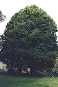
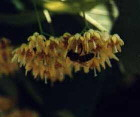
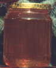

Il miele di tiglio è caratterizzato dal sapore balsamico e aromatico, intenso. In pianura l'albero fiorisce nel mese di Giugno, diffondendo un'odore caratteristico. In alcune annate le api raccolgono anche la melata prodotta dagli afidi che suggono la linfa dalle foglie.
Si ottiene così un miele di melata di tiglio, di colore scuro con riflessi tendenti al verde, molto particolare. La cristallizzazione è lenta e nel caso di presenza di melata non avviene.

La medicina
popolare indica questo miele adatto a favorire i processi digestivi e diuretici
e ad alleviare i sintomi della bronchite e della tosse.